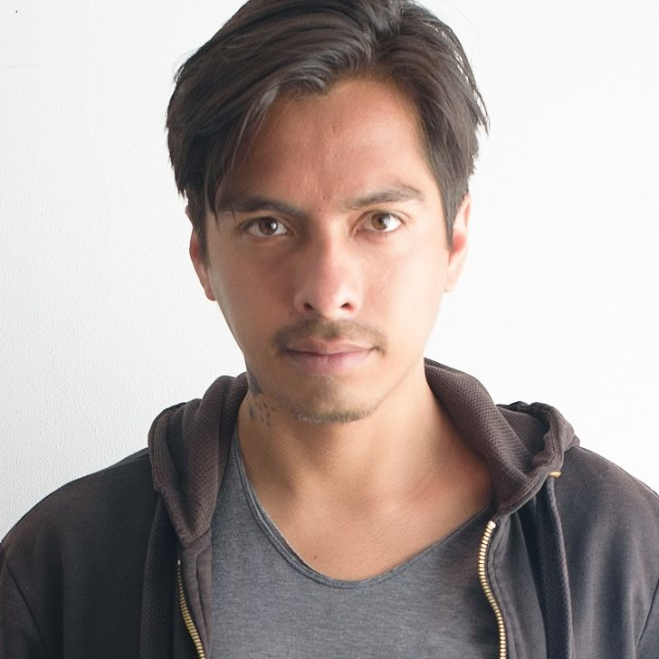

Jose Alcívar

Summary
I'm a 3D Artist who is always looking for new challenges with over 10 years of experience in VFX, Animated Films, Short Films, TVC and Advertising.
Throughout my career I have gained knowledge of industry standard softwares, rendering engines and coding skills.
Proven track record of delivering high-quality visual effects for both live-action and animated projects.
Transitioning career towards becoming a proficient app developer, leveraging a passion for technology and a commitment to continuous learning.
Experience
Image Engine Design Inc, Vancouver — Senior Lighting TD
November 2022 - March 2024
LIFT | Avatar: The Last Airbender
- Light multiple types of shot ensuring consistency in lighting, color
balance and mood between the various elements of the scene.
- Create light rigs, modules and nuke templates for sequence key shots.
- Contribute to achieve the final look development of hero assets.
- Communicate and troubleshoot technical issues.
- Work with FX and Compositing team members to achieve high quality complex
shots.
- Offer guidance and mentoring for junior artists.
- Update documentation with examples, best practices, show info.
Digital Domain, Vancouver — Lighting Artist
October 2021 - November 2022
Black Adam | Ant-Man and the Wasp: Quantumania
- Create photorealistic CG lighting that meets all technical and aesthetic standards for the projects.
- Complete tasks within production deadlines while being largely self-directed.
- Be able to troubleshoot common rendering and lighting technical issues.
Tangent Animation, Winnipeg — Lighting & Compositing Artist
January 2021 - August 2021
Maya and the Three
- Manage render scenes, elements and assets.
- Add FX and lens elements from libraries to enhance the look and mood of the story.
- Create light rigs and compositing scripts for keys and parent shots, that will be propagated in the rest of the sequence.
- Deliver a final image with all the requirements of the DI department.
DNEG, Montreal — Lighting TD
February 2020 – December 2020
Dune: Part One | Ghostbuster: Afterlife | Infinite | The Irregulars
- Light and render CG elements to match on-set lighting elements.
- Work in partnership with compositors and production to ensure shots are delivered to the very highest standard.
- Create clean and readable workflow scripts, tools and comps within existing guidelines.
MPC, Montreal — Lighting Key Artist
April 2018 – December 2019
The Call of the Wild, The Nutcrackers, X-Men: Dark Phoenix
- Light and render CG elements to match on-set lighting elements.
- Deliver technical and creative renders/final shots according to agreed schedule and supervisor specifications.
- Create the lighting for sequences and manage the team assigned to them.
- Help to optimize the memory consumption and render times.
- Work with other departments to develop creative solutions for shots or sequences.
- Mentor junior artists.
Aronnax Animation Studio, Lima — Senior Lighting Artist
August 2016 – July 2017
Condorito: The Movie
- Light, Render and Pre-Comp CG Shots.
- Support the Lead Lighter and CG Supervisor to fulfill the creative vision of the project.
- Met weekly shot quotas during tight deadlines.
Matte CG, Quito — Lighting & Lookdev Artist
January 2013 – January 2016
Advertising, TVC, Short Films: “After Work”, “Mr. Blue Footed Bobby”
- Produce stylized images according to the creative need of each project.
- Create optimized lighting scenes with a good balance between look and speed.
- Help to optimize the quality and efficiency of the lighting and rendering pipeline.
- Design the shading for the main character and props.
- Work with other departments to develop creative solutions for shots or sequences.
- Mentor junior artists.
Skills
- Experience using Gaffer, Houdini, Katana, Maya, Nuke, OSL, Python, ShotGrid, TouchDesigner and other VFX softwares.
- Strong understanding of lighting principles and color theory.
- Experience handling complex environments, crowds, hero characters, fx, fur & volumes.
- Knowledgeable in compositing, shading, scripting.
- Positive attitude to troubleshooting technical problems.
- Excellent communication and collaboration with production and other departments.
- Ability to work effectively under pressure and meet tight deadlines.
- Experience mentoring junior artists and documenting process and best practices under the wiki.
- Basic knowledge in HTML, CSS and JavaScript.
Awards
Best of Show in SIGGRAPH Asia 2017 — After Work, Matte CG
- In charge of the shading for the main character.
- Set up the light rig for sequences.
Animandino Best Technique 2016 — Mr. Blue Footed Booby, Matte CG
- In charge of the shading and lighting of the whole project.
Others
Hobbies
Contact Me